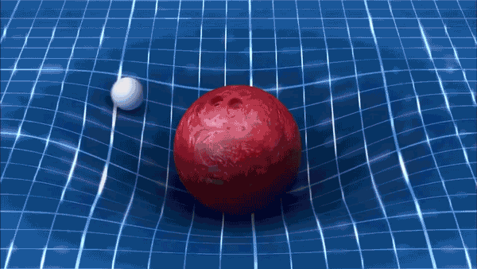
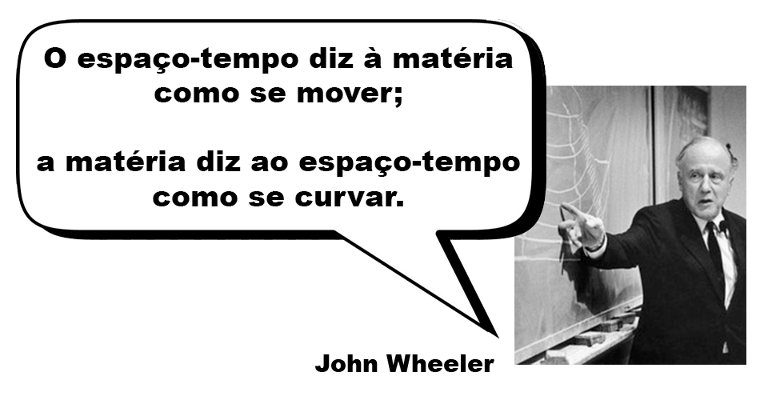

Uma forma de visualizarmos melhor a gravidade como a manifestação da curvatura do espaço-tempo é o modelo da cama elástica:

Neste modelo, o tecido da cama elástica representa duas dimensões espaciais do espaço-tempo. Na ausência de massa/energia, o espaço-tempo se mantém plano:
Porém, na presença de uma massa, o tecido se deforma, assim como a Terra deforma o Espaço-Tempo a sua volta:

Outros corpos que passem por essa região curva, então, terão suas trajetórias “desviadas” por ela:
Na verdade, esses corpos só estão seguindo o caminho mais reto para eles (uma geodésica no Espaço-Tempo), mas esse caminho é modificado pela própria curvatura do Espaço-Tempo!
Vale ressaltar, porém, que esse modelo possui algumas falhas: A primeira delas é só conseguir representar duas das quatro dimensões em que vivemos, dando a impressão de que não estamos totalmente envoltos nessas quatro dimensões. A imagem abaixo nos ajuda a visualiza melhor que, na verdade, a gravidade deforma o Espaço-Tempo em todas as direções a nossa volta:

Mas, mesmo assim, essa imagem também não contempla a deformação da dimensão temporal. É importante lembrar, como vimos anteriormente, que o tempo também é afetado pela gravitação. Afinal, quanto mais próximos estamos de um objeto massivo, mais devagar o tempo passa para nós!
Com isso, podemos resumir as ideias centrais da Teoria da Relatividade Geral em uma única frase:
